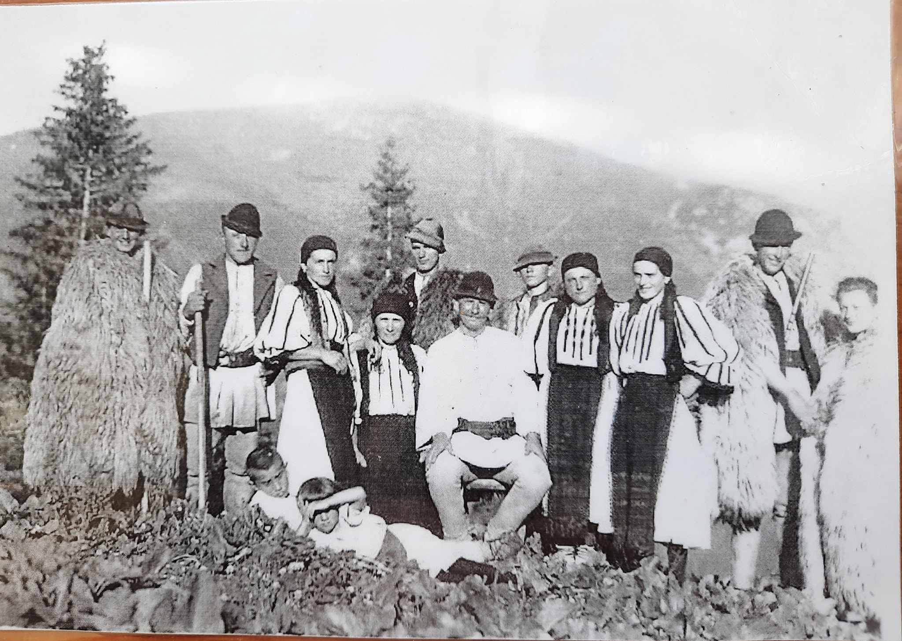
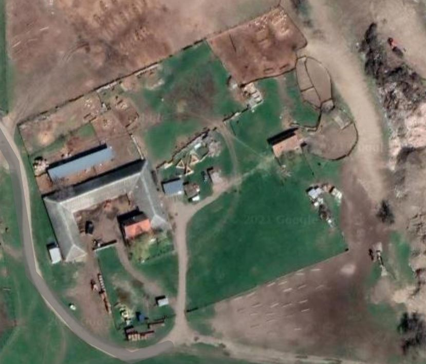

Ferma datează încă din secolul al XIX-lea, când era amplasată la poalele Munților Retezat, în localitatea Râu de Mori, județul Hunedoara

Imagine din 1950 cu străbunicii familiei la stâna din Retezat.
În prezent, suntem localizați în comuna Șag, județul Timiș.
Atașat avem o imagine satelitară cu ferma.


Galerie de poze din fermă